OVERVIEW
- Part 1: Understanding TOPOJson and the art of map-making
- Part 2: Putting the data in and doing funky stuff to it to make it look cool
PART 1: Understanding TOPOJson and the art of map-making

- The projection used
- The SVG element
- Map boundaries
MAP PROJECTIONS
Mercator Projection

Gnomonic Projection

Albers USA Projection

Settting the projection
// Map dimensions
var w = 1280,
h = 800;
var projection = d3.geo.albers()
.scale(900) // zoom on the map
.translate([w / 2 - 200, h / 2 - 100]); // sets location of the map on the screen
Place the projection on the screen
var path = d3.geo.path()
// takes the [longitude,latitude] pairs and converts to pixel position [x,y] on screen
.projection(projection);
Create the SVG Element
var svg = d3.select("body").append("svg")
.attr("width", w)
.attr("height", h);
Drawing the actual map
The "path" element is the most powerful element in the SVG library of basic shapes. You can use it to create lines, curves, arcs and more.
d3.json("../us.json", function(error, us) {
if (error) throw error; // seems to be a convention in d3 examples to include this, does nothing
// insert all land masses and classify as land for css styling
svg.insert("path")
.
.
.
Drawing the actual map
Load the land data (not yet drawn) and set the class for styling.
d3.json("../us.json", function(error, us) {
if (error) throw error; // seems to be a convention in d3 examples to include this, does nothing
// insert all land masses and classify as land for css styling
svg.insert("path")
.datum(topojson.feature(us, us.objects.land))
.attr("class", "land")
.
.
.
Drawing the actual map
The "d" attribute of a path contains the instructions for drawing. Here, we use our geographic shape generator (named path) to convert the loaded data into drawing instructions.
d3.json("../us.json", function(error, us) {
if (error) throw error; // seems to be a convention in d3 examples to include this, does nothing
// insert all land masses and classify as land for css styling
svg.insert("path")
.datum(topojson.feature(us, us.objects.land))
.attr("class", "land")
.attr("d", path);
Drawing us.objects.land
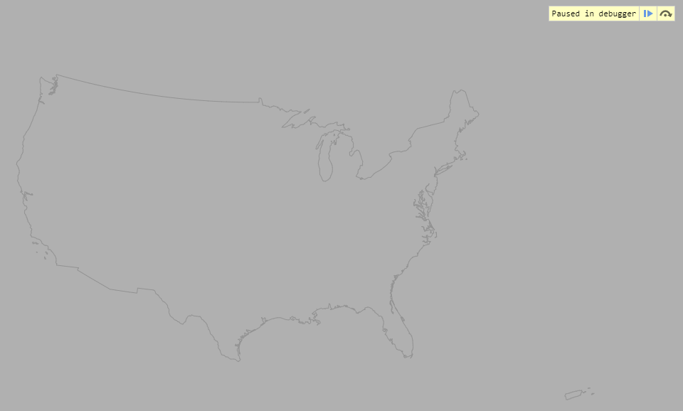Drawing the actual map
Add the state boundaries.
d3.json("../us.json", function(error, us) {
if (error) throw error; // seems to be a convention in d3 examples to include this, does nothing
// insert all land masses and classify as land for css styling
svg.insert("path")
.datum(topojson.feature(us, us.objects.land))
.attr("class", "land")
.attr("d", path);
// drawing the state boundaries
svg.insert("path")
// specifies only internal state borders should be drawn;
// the coastlines are not stroked so as to retain detail around small islands and inlets
.datum(topojson.mesh(us, us.objects.states, function(a, b) { return a !== b; }))
.attr("class", "state-boundary")
.attr("d", path);
Drawing us.objects.states
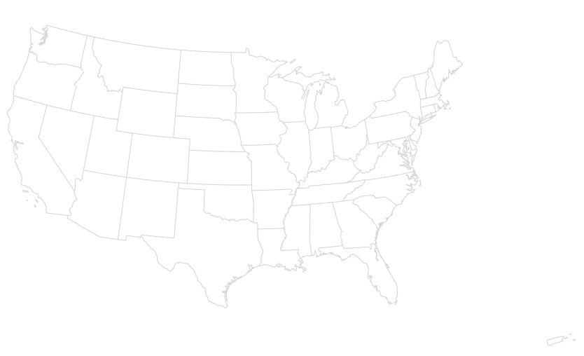Exercise 1:
We have added a lab.css file that you can edit to answer some of these questions.
- The map is faint and hard to see. What happens if you change the color of the .state-boundaries border? What about the land border?
- The land in this map has no fill. Change the color of the states.
- Change the width of the borders.
- Adjust the zoom of the map.
- Have the map show counties instead of only states.
PART 2: Utilizing data in D3 Geographic
(...from your favorite dataset)Drawing the actual map
Same as before, except ...
var w = 1280,
h = 800,
opacityCircle = 0.7; // sets the opacity of the circles
// Projection setup
var projection = d3.geo.albers()
.scale(900) // zoom on the map, see alaska and hawaii at 400
.translate([w / 2 - 200, h / 2 - 100]); // sets location of the map on the screen
// d3.geo.path is the primary mechanism for displaying geographic data
// generates the path string suitable for the "d" attribute of an SVG path element
var path = d3.geo.path()
// takes the [longitude,latitude] pairs and converts to pixel position [x,y] on screen
.projection(projection);
// Add an svg to the body of the page
var svg = d3.select("body").append("svg")
.attr("width", w)
.attr("height", h);
// Draw the map
// step through the topojoson
d3.json("../us.json", function(error, us) {
if (error) throw error; // seems to be a convention in d3 examples to include this, does nothing
// insert all land masses and classify as land for css to work on
svg.insert("path", "#states")
.datum(topojson.feature(us, us.objects.land))
.attr("class", "land")
.attr("d", path);
// drawing the state boundaries
svg.insert("path", "#states")
// specifies only internal state borders should be drawn;
// the coastlines are not stroked so as to retain detail around small islands and inlets
.datum(topojson.mesh(us, us.objects.states, function(a, b) { return a !== b; }))
.attr("class", "state-boundary")
.attr("d", path);
});
What's the deal with svg.insert("path", "#states")
Although this code is written after the d3.json() it is actually ran before
// Adding states, circles and cells object to a group element ("g") of the SVG
var states = svg.append("g")
.attr("id", "states");
var circles = svg.append("g")
.attr("id", "circles");
var cells = svg.append("g") // will be used for Voronoi diagram
.attr("id", "cells");
What's the deal with svg.insert("path", "#states")
Passing "#states" to svg.insert inserts this path before the states graph in the html
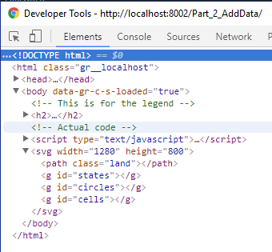Adding our Data
"g" is for group
// Adding states, circles and cells object to a group element ("g") of the SVG
var states = svg.append("g")
.attr("id", "states");
var circles = svg.append("g")
.attr("id", "circles");
var cells = svg.append("g") // will be used for Voronoi diagram
.attr("id", "cells");
Adding our Data
"g" is for group
Adding our Data
Instantiating some variables
// Load in flights data
d3.csv("../data/flights-airport_all.csv", function(flights) {
var linksByOrigin = {}, // airport connections for drawing lines
countByAirport = {}, // how many airport connections * 5 for calculating circle radius
locationByAirport = {}, // longitude and latitude of airports
Airport_count = {}, // how many flights out of an airport
positions = []; // airport pixel x and y locations
// this will be used to create the lines between origin and destination airports
var arc = d3.geo.greatArc()
.source(function(d) { return locationByAirport[d.source]; })
.target(function(d) { return locationByAirport[d.target]; });
Adding our Data
Load in some D.C. flights data
// Load in flights data
d3.csv("../data/flights-airport_all.csv", function(flights) {
...
// assigning flight data to variables
flights.forEach(function(flight) { // loop through every row of the csv
var origin = flight.origin, // grab the origin
destination = flight.destination, // grab the destination
count_airport = +flight.count, // the plus converts .count to an integer
// grab the links array associated with this origin, if none initialize empty array
links = linksByOrigin[origin] || (linksByOrigin[origin] = []);
// add the current origin/destination link to the links array
links.push({source: origin, target: destination});
// counting 5*number of links for each airport location to determine circle size
countByAirport[origin] = (countByAirport[origin] || 0) + 5;
countByAirport[destination] = (countByAirport[destination] || 0) + 5;
// getting counts for flights
Airport_count[origin] = (Airport_count[origin]|| 0) + count_airport;
});
Adding our Data
This data did not have lng, lat of the airports. Use another csv
// Load in flights data
d3.csv("../data/flights-airport_all.csv", function(flights) {
...
// Load airport location data
d3.csv("../data/airports_2.csv", function(airports) {
airports = airports.filter(function(airport) {
if (countByAirport[airport.iata]) { // Only consider airports with at least one flight.
var location = [+airport.longitude, +airport.latitude]; // grab the airport longitude and latitude as integers
locationByAirport[airport.iata] = location; // store location of airport as key:value in object
positions.push(projection(location)); // convert latitude and longitude to pixel x and y locations and save to array
return true; // need to return true to the filter function to keep the airport
}
});
Adding our Data
Adding a Voronoi layout
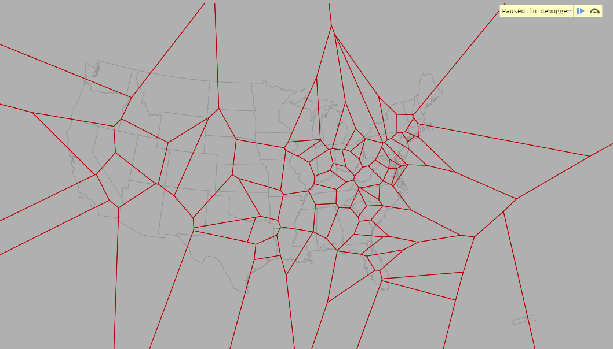Adding our Data
Adding a Voronoi layout
// Load in flights data
d3.csv("../data/flights-airport_all.csv", function(flights) {
...
// Load airport location data
d3.csv("../data/airports_2.csv", function(airports) {
...
// Compute the Voronoi diagram of airports' projected positions.
var polygons = d3.geom.voronoi(positions);
// add all the airports to the cells
var g = cells.selectAll("g")
.data(airports)
.enter()
.append("g");
Adding our Data
Adding a Voronoi layout
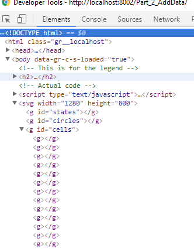Adding our Data
Adding a Voronoi layout
// Load in flights data
d3.csv("../data/flights-airport_all.csv", function(flights) {
...
// Load airport location data
d3.csv("../data/airports_2.csv", function(airports) {
...
// Update "legend" with airport info on mouseover
g.append("path")
.attr("class", "cell")
.attr("d", function(d, i) { return "M" + polygons[i].join("L") + "Z"; })
Adding our Data
Adding a Voronoi layout
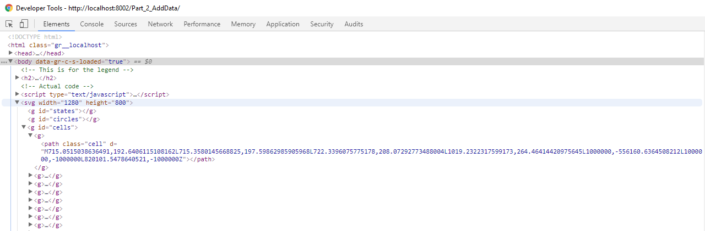Adding our Data
Adding a Voronoi layout
Adding mouseover functionality
// Load in flights data
d3.csv("../data/flights-airport_all.csv", function(flights) {
...
// Load airport location data
d3.csv("../data/airports_2.csv", function(airports) {
...
// Update "legend" with airport info on mouseover
g.append("path")
.attr("class", "cell")
.attr("d", function(d, i) { return "M" + polygons[i].join("L") + "Z"; })
.on("mouseover", function(d, i) {
d3.select("h2 span").text("")
.append("p").text(d.name).style("font-size", "18px")
.append("p").text(d.city + ", " + d.state)
.append("p").text("Flights: " + Airport_count[d.iata]);
});
Adding our Data
Adding a Voronoi layout
Paragraphs not appended to h2 span until a mouseover event
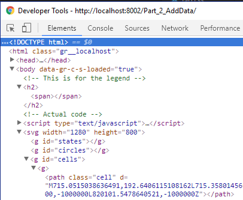Adding our Data
Adding a Voronoi layout
Paragraphs not appended to h2 span until a mouseover event
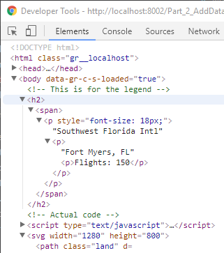Adding our Data
Adding connections between airports
// Load in flights data
d3.csv("../data/flights-airport_all.csv", function(flights) {
...
// Load airport location data
d3.csv("../data/airports_2.csv", function(airports) {
...
// Create arcs for all links originating out of selected airports
g.selectAll("path.arc")
.data(function(d) { return linksByOrigin[d.iata] || []; })
.enter()
.append("path")
.attr("class", "arc")
.attr("d", function(d) { return path(arc(d)); });
Adding our Data
Adding connections between airports
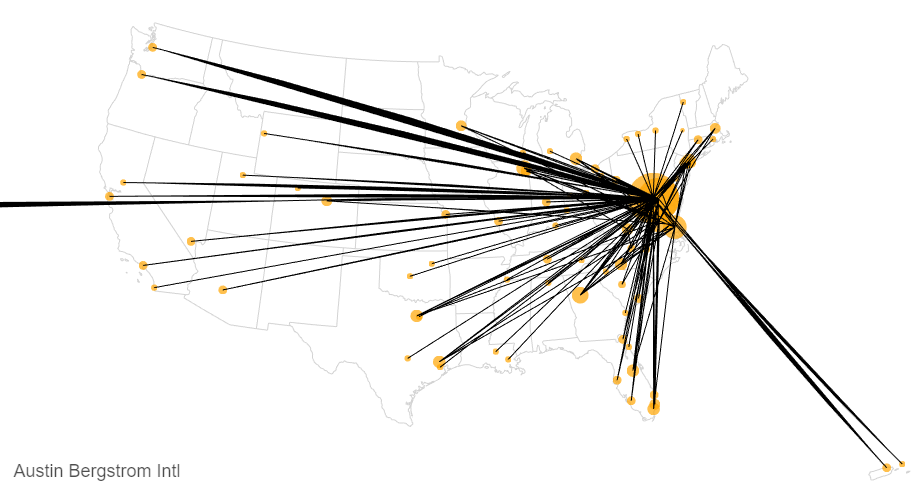Adding our Data
Hiding connections until mouseover
path.arc {
pointer-events: none;
fill: none;
stroke: #000;
display: none;
}
path.cell {
fill: none;
pointer-events: all;
}
#cells g:hover path.arc {
display: inherit;
}
Adding our Data
// Load in flights data
d3.csv("../data/flights-airport_all.csv", function(flights) {
...
// Load airport location data
d3.csv("../data/airports_2.csv", function(airports) {
...
// Create circles
circles.selectAll("circle")
.data(airports)
.enter()
.append("circle")
.attr("cx", function(d, i) { return positions[i][0]; })
.attr("cy", function(d, i) { return positions[i][1]; })
.attr("r", function(d, i) { return Math.sqrt(countByAirport[d.iata]); })
.sort(function(a, b) { return countByAirport[b.iata] - countByAirport[a.iata]; })
.attr("fill", "orange")
.attr('opacity', opacityCircle);
});
});
Adding our Data
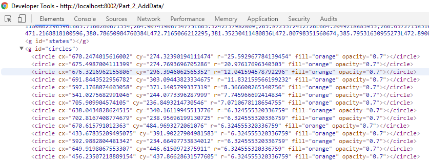Adding our Data
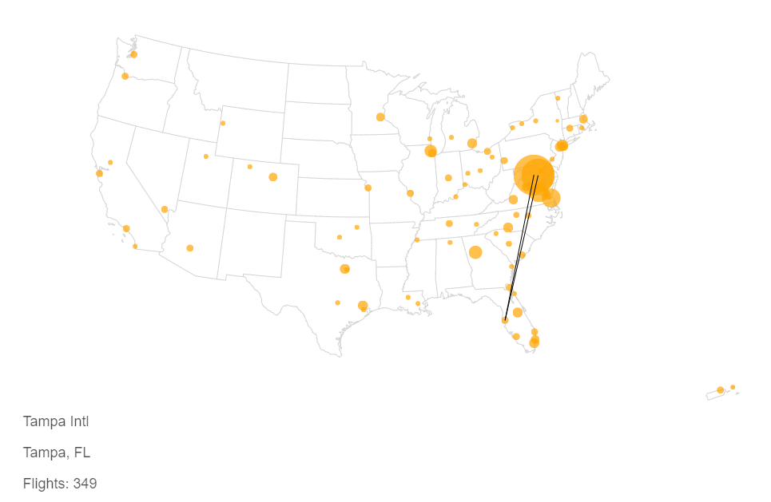Exercise 2:
Last week, we created a .csv with airport origins, destinations, and counts. This file required some cleaning to remove US airports not within the states. We have provided you with the resulting .csv, "filteredflights.csv".
- Replace the current data with this csv in the code.
- The circles are now hard to discern due to the overlap. Adjust the circle features to better show individual airports.
- Change the radius of the circle to depend upon number of flights (counts) instead of "links".
- Adjust how the radius is calculated from the counts for better scaled circles.